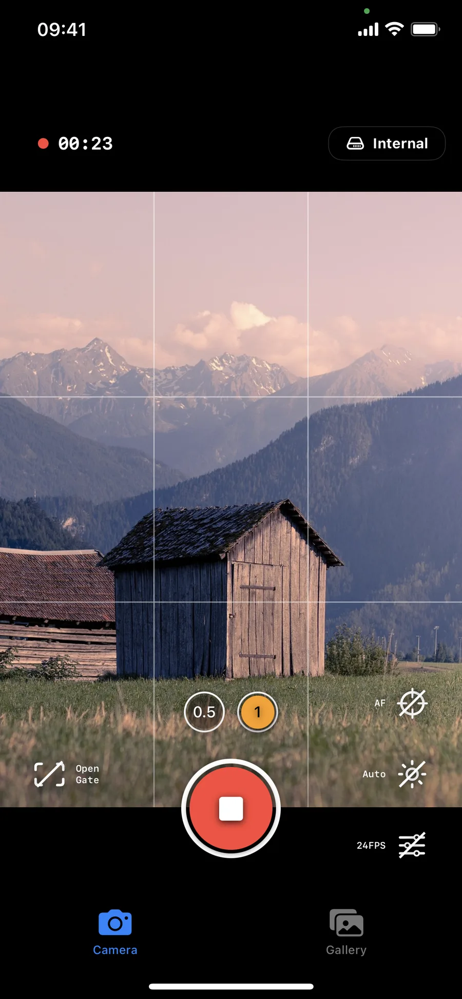
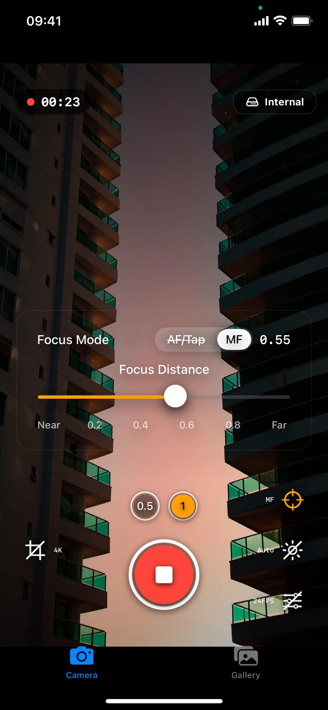
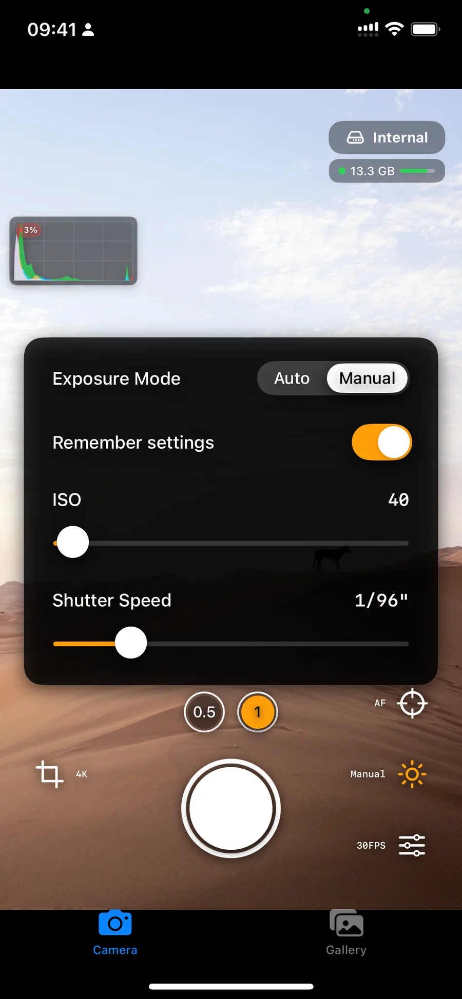
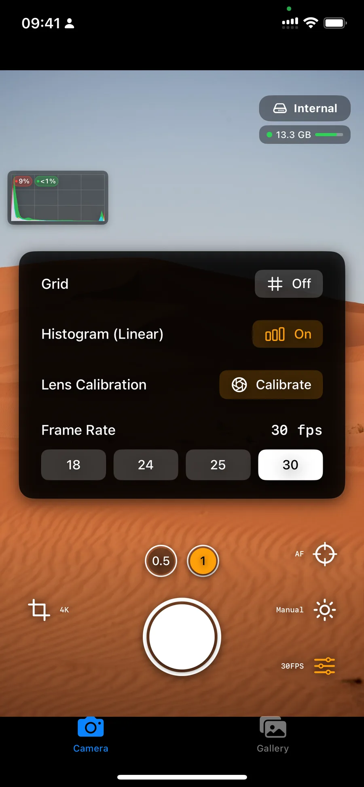
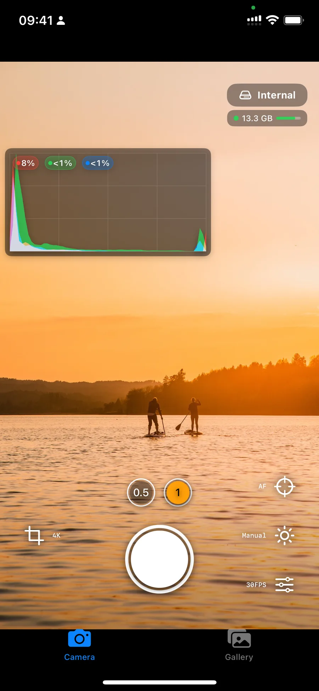
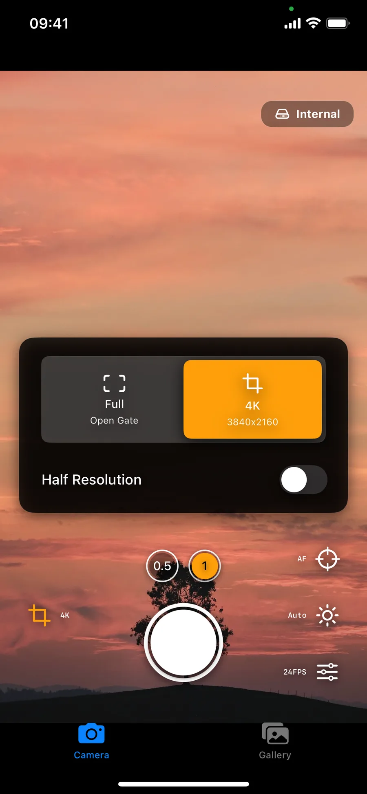
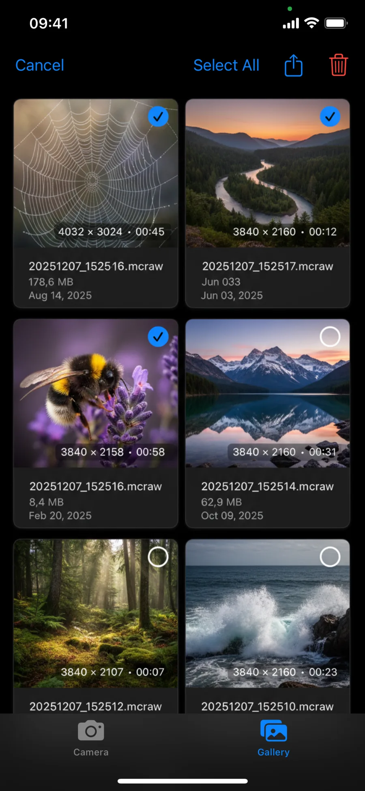

Record sensor-grade video data for grading flexibility, highlight recovery workflows, and professional finishing pipelines.
RAW Video for iPhone
RAW Cam captures open-gate
DNG and MCRAW video
with real on-set control.
RAW Cam is built for filmmakers who want maximum image quality from iPhone. Shoot true RAW video, dial in manual exposure and focus, watch clipping and histogram feedback, and move media fast to your editing workflow.
Why filmmakers choose RAW Cam
RAW Cam is designed around image quality and speed on set. It gives you direct control when you shoot and a smoother path into post-production.
Shoot full sensor open gate, 4K, or Full HD with optional half resolution depending on your speed and storage requirements.
Take control with manual settings, tap focus before rolling, and adjust focus or exposure smoothly while recording.
Evaluate exposure and camera balance on-device with histogram overlays, clipping indicators, and an optional horizon indicator.
Save to internal gallery, user-selected folders, or external SSD and quickly hand footage off through AirDrop or file sharing.
Use built-in stabilization controls or record Gyroflow GCSV companion data for stabilization and post work in compatible tools.
RAW Cam interface screenshots
Browse the camera UI, controls, and gallery flow exactly as they appear in the app.







Built for practical on-set workflow
RAW Cam helps you move from capture to edit with fewer workarounds and clearer camera feedback.
Set your shot fast
Pick open gate or 16:9 mode, choose frame rate, and dial manual or auto controls based on your scene.
Monitor while recording
Use live histogram, clipping data, focus tools, and horizon cues to stay in control during the take.
Handoff to post production
Keep footage internal or external, then export through AirDrop or file sharing and continue in your grading pipeline.
What you get with RAW Cam
Core capabilities based on the current App Store listing and active app features.
- One-time purchase model with no subscription requirement.
- DNG and MCRAW RAW video workflows for grading and finishing.
- Open gate, 4K and Full HD capture paths with multiple frame-rate options.
- Manual focus and exposure controls including tap-based setup before recording.
- Internal plus external storage options with in-app gallery handling.
- App privacy declaration: no data collection at all!
Is RAW Cam a one-time purchase or a subscription?
RAW Cam is offered as a one-time purchase on the App Store. The current listing states there is no subscription model.
Who is RAW Cam for?
RAW Cam is made for filmmakers and creators who want the highest-quality RAW video an iPhone can provide, with more direct camera control during capture.
Can I shoot open gate RAW video and still choose classic framing?
Yes. RAW Cam supports open gate, and also provides classic 16:9 capture options including 4K and Full HD style workflows.
Does RAW Cam work with external storage and editing handoff?
Yes. You can record to internal or external locations, then move files through AirDrop or sharing tools depending on your setup.
Where can I verify privacy details?
The full policy is published at leadtheway.hr/rawcam/privacypolicy/. The app listing also indicates no data collection.
Get RAW Cam for iPhone
Capture true open-gate RAW video, keep creative control, and move faster from set to grade.
Buy RAW Cam on the App StoreUS App Store snapshot on March 26, 2026: 4.7/5 from 17 ratings.